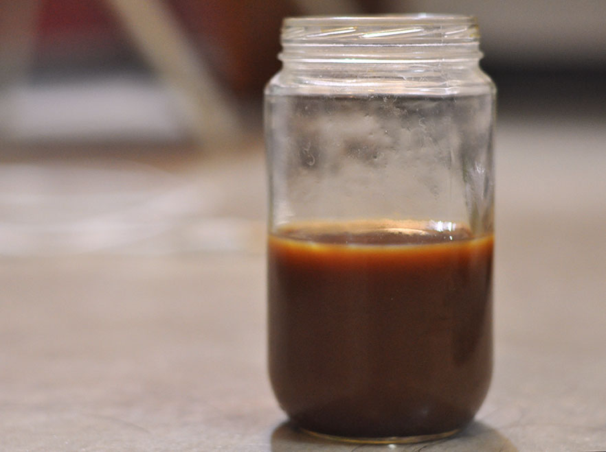

My Work

I work as a professional coffee taster and taste everything from commercial instant coffee to high grade artisan coffee (mostly the latter).
To me, coffee is a way of life and it inspires my soul. I can never start my day without a cup of coffee. Talk to me before my coffee, and you won't get a good vibe. That's how important it is to me. My favorite coffee place is this underground cafe you probably don't know about (and I'm not telling you so it doesn't become mainstream!) and they serve artisan coffee only. My favorite order here is the "organic, gluten free soy cappuccino with no foam".
Here, you can find some of my coffee chronicles, where I post coffee reviews suggested by friends and family. None of them are affiliated with my proffesional reviews that I do for my job.
This is the organic chai winter solstice latte I got a cafe earlier this week. It is also, importantly , organic. Check out my review in this video below.
Kickapoo Organic Chai Charbanta
This coffee is fair trade AND organic! *claps* Check out my review in this video.
Tanzanian Coffee
As part of my job, I got to fly to Tanzania recently to review more coffee. This one is something I tried on my own while exploring the town of Zanzibar. It is handmade by Uncle Babu, a sweet Tanzanian old man that makes coffee traditionally for a living. I watched the entire process, from the removal of coffee beans from the fruit till the roasting of coffee beans in a ceramic pot on fire.
The coffee tasted very pure and rich. It was refreshing because it has no flavors added, unlike the usual coffee I try. It has a very clean finish with no aftertaste whatsoever, which was nice. It was slightly acidic but not sour, which was good. It also had a very smooth and light body. I highly enjoyed the coffee making process, which was very unique because I am sure not many people know what coffee fruit even looks like. So, if you guys ever get to go to Tanzania, try their coffee!
Mason Jar Coffee Cups
I am going to go off tangent here from the regular coffee reviews. I was so excited about the new mason jar that I got (I talked about in my earlier review video) that I made a video of my morning routine of making coffee with it. Using mason jar cups for coffee is sooo unique! It was an old preservative jar that I used to store preserved fruits, which also makes it environmentally friendly! Aren't I creative? Please enjoy this short personal art project of mine.